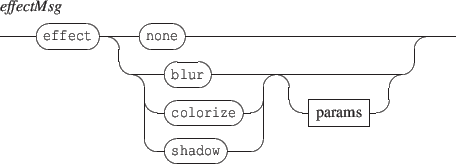

Next: 2.4.1 The blur effect
Up: 2. Common messages
Previous: 2.3.4 Relative color messages
Contents
Index
2.4 The 'effect' messages
The effect message sets a graphic effect on the target object.

- none: removes any effect set on the target object.
- blur, colorize, shadow: sets the corresponding effect. An effect always replaces any previous effect. The effect name is followed by optional specific effects parameters.
NOTE An effect affects the target object but also all the target slaves.
Subsections
Grame - INScore project